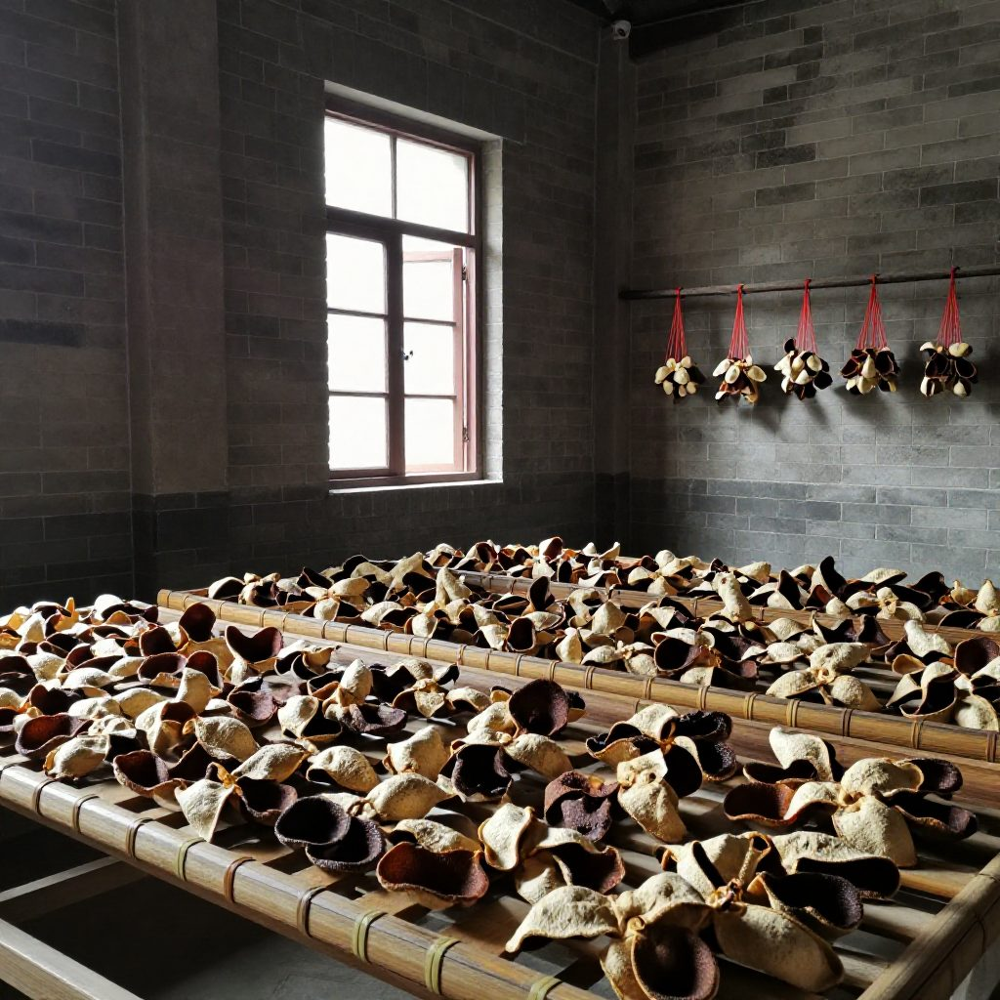
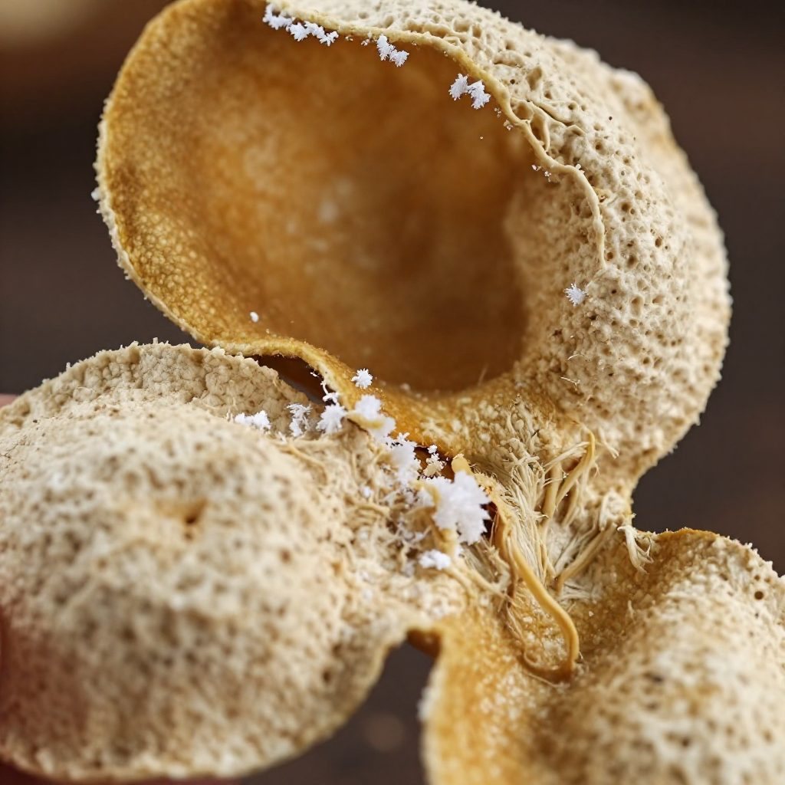
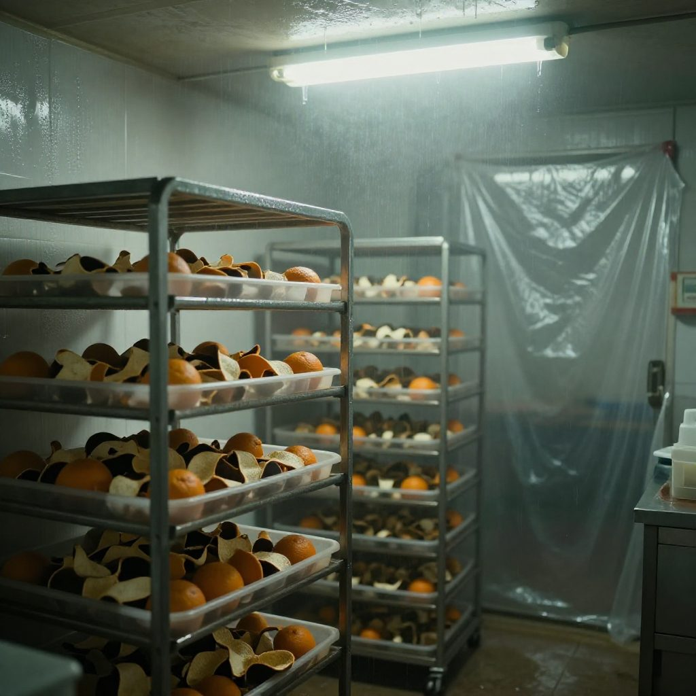
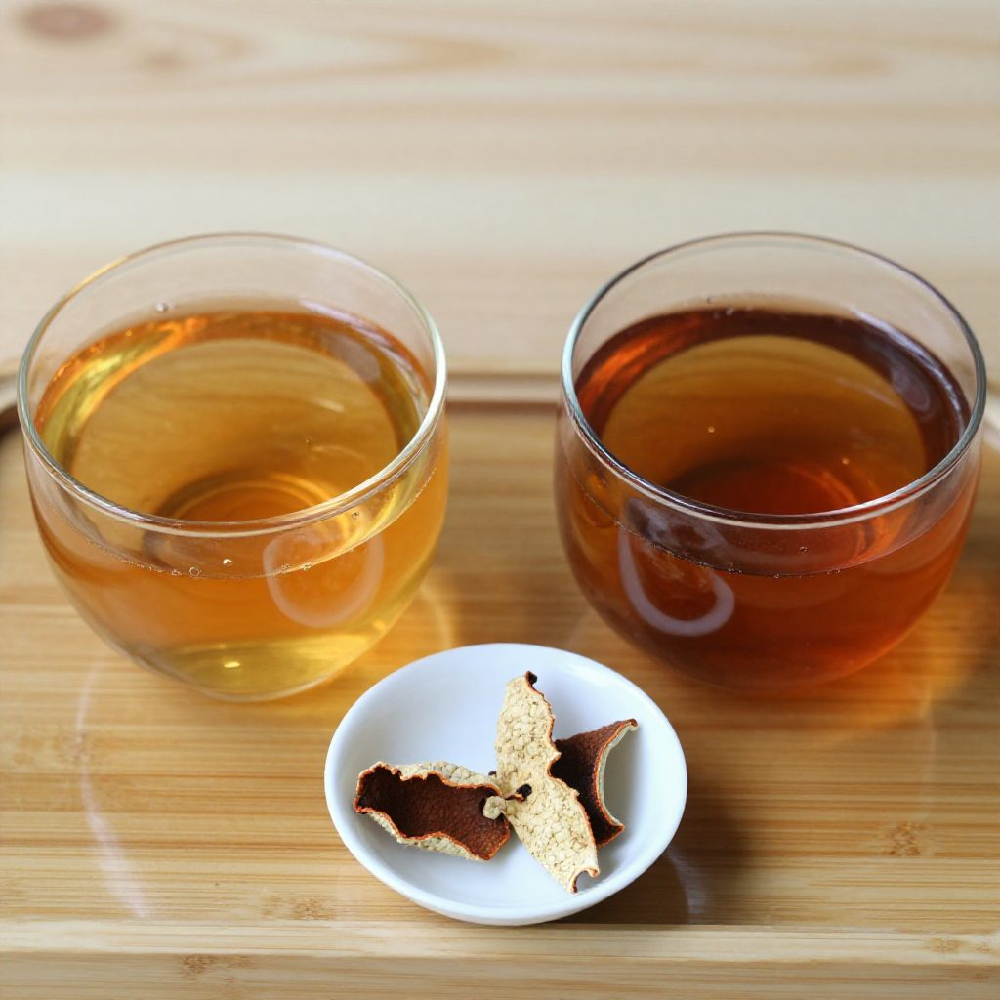
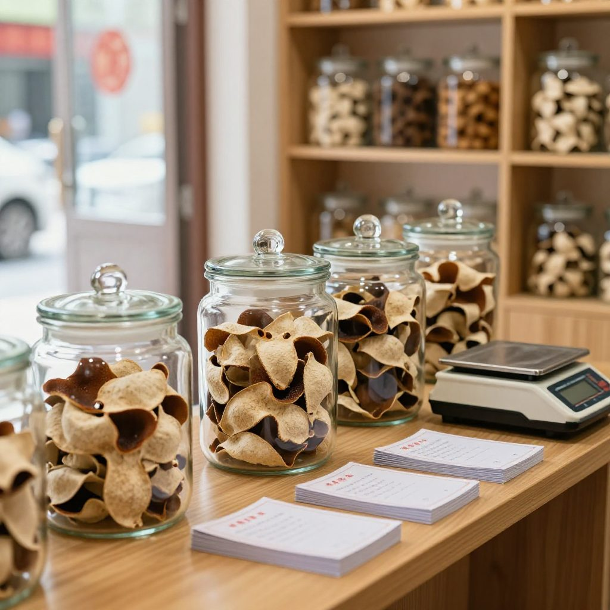

清晨七點，新會天馬村的陳化倉外，霧氣尚未散盡。六十五歲的陳師傅掀開一片正在沉睡的新會陳皮，湊近鼻尖細細品聞。那股帶着梅子香與薄荷涼意的複合香氣，是他守了三十年的味道。
「這才叫時間的味道，」他輕聲說，「急不來的。」
而在城裡另一處倉儲市場，有人正以三分之一的價格，叫賣着「十五年」的老陳皮。皮相黑亮整齊，聞起來香氣濃郁。陳師傅聽說後，只是搖了搖頭：「那不是陳皮，那是皮子。」
這句話，道破了陳皮市場最核心的亂象——年份虛標與工藝造假，而其根源，就在於「乾倉」與「濕倉」的一字之差。
一、場景：茶坑村的老倉房

沿着銀洲湖西岸驅車前行，兩旁盡是碧綠的茶枝柑果園。茶坑村是梁啟超故鄉，也是新會陳皮四大核心產區之一，泥土中保留着遠古蜆殼成分，為柑樹提供了獨特的礦物質養分。
村口一座改建自清代青磚瓦房的老倉房，是陳師傅父親留下的家族陳化基地。倉內竹架上整齊排列着數百片正在「睡眠」的老陳皮，每一片都用紅繩串起，透着歲月沉澱的溫潤氣息。
「我父親教我，看陳皮好不好，先看它的內囊。」
他從架上取下一片約十二年陳化的陳皮。內囊已經自然疏鬆，邊緣呈現典型的「雪花狀」風化痕跡，輕輕一折，皮身柔韌而富有彈性。
「自然陳化嘅老皮，內囊係『活』嘅，會隨年份慢慢脫落，顏色由白轉黃褐——呢啲係時間留低嘅指紋。」
「咁點分真假？」
「你睇呢度，有深有淺、紋理自然，油室嘅點狀凸起清晰可見。呢啲機器做唔出嚟。」
對比之下，那些外觀烏黑均勻、內囊僵硬結塊的「老皮」，在他眼裡只是一具皮囊——它們多數來自高溫高濕的速成環境，甚至經過硫磺熏製，外表迷惑，內裡早已失去活性。
二、知識：乾倉與濕倉，兩種命運的分岔

第一類：乾倉自然陳化。這是傳承數百年的正統工藝，也是新會陳皮非遺炮製技藝的核心環節——把茶枝柑開皮、翻皮、曬製後，放入通風乾燥的倉庫，在自然溫濕度變化中緩慢醇化。關鍵在一個「慢」字：新會獨特的「濕盆地」氣候，讓陳皮在乾燥與潮濕、冷與熱的季節交替中完成「呼吸」；這種緩慢的氧化與微生物作用，讓果皮中的刺激性揮發油逐步轉化。
第二類：濕倉催陳。將陳皮置於高溫高濕甚至密閉不通風的環境中，強行模擬老皮外觀。有業內人士透露，濕倉環境溫度常維持在攝氏三十五至四十度，相對濕度超過七成至八成，遠超天然條件——三到五個月就能讓新皮「變」成十五年外觀，但內裡結構早已破壞。
「咁濕倉嘅皮，最怕係咩？」
「黴菌。高溫高濕係真菌嘅溫床，黃麴霉素係一級致癌物，對肝腎嘅損害係唔可逆嘅。呢種皮唔係補身，係傷身。」
第三類：人工做舊。這是更惡劣的造假手段——硫磺熏製、化學染色、高溫烘烤，直接在短時間內改變外觀。硫熏皮沖泡後茶湯發酸、香氣快速消散；染色皮茶湯色澤異常深沉，帶有明顯人工痕跡。
三、濕倉現場長什麼樣

真正走進濕倉，第一感覺不是「香」，是悶。牆上掛着水珠，空氣濕得能擰出水，紫外光管發出偏綠的白光，貨架上密密麻麻攤着皮——顏色深得很快，味道卻說不出哪裡不對。
陳師傅說，做舊皮最怕的不是「聞不出來」，而是「聞得太出來」：香氣濃得刺鼻、單薄、沒有層次，而且越放越散。「真老皮係越沖越香，假老皮係越沖越淡。」
四、實用：三招快速鑒別乾倉陳皮

一看外觀。優質乾倉陳皮色澤自然過渡、深淺不均，表皮油室點狀凸起清晰，內囊疏鬆有自然脫落痕跡，輕折不易斷裂。劣質陳皮整片烏黑均勻、表皮死板無紋理、內囊僵硬結塊，皮身厚重易折斷，輕刮表面會掉渣。
二聞香氣。優質乾倉陳皮是複合型分層香氣——新皮為果香，中年份逐步轉為陳香，高年份則帶有藥香、木香與薄荷涼意的混合，溫潤醇厚，十幾泡後仍有留存。劣質陳皮香氣單薄刺鼻，或帶明顯酸味、黴味、焦糖味；硫熏皮沖泡後快速散發酸腐氣息。
三品茶湯。優質乾倉陳皮沖泡後茶湯橙黃透亮，入口先微苦後回甘，甜潤持久，湯感稠滑，耐泡度高。劣質陳皮茶湯渾濁，口感苦澀酸麻，無回甘，兩三道後香氣盡失。
「陳師傅，我唔識睇內囊，點算？」
「咁就買一小包，返屋企煲兩道。第一道睇湯色，第二道聞香氣——過得呢兩關，先講年份。」
五、選購建議：性價比的黃金分割

選購陳皮，核心在於「對口」，而非「越老越好」。
三至五年皮：柑香清新，藥性溫和，適配日常調味與輕養生，是普通家庭入門首選。
八至十年皮：香氣醇厚，藥性趨於穩定，陳化潛力仍可觀，適合做主力養生口糧。
十五年以上皮：藥性溫潤柔和，老少皆宜，兼具品鑑與收藏價值，屬稀缺資源，價格也最高。
家庭日常養生，選三至十年核心產區正品，性價比最高。盲目追求十五年以上老皮，不僅價格高昂，更容易踩中造假陷阱。
選購時，建議認準三個「有」：有明確產區標示（天馬、梅江、茶坑、東甲）、有權威檢測報告、有完整溯源記錄。橙皮苷含量方面，要注意標準已經更新：二〇二〇年版《中國藥典》對廣陳皮單獨制定含量限度——含橙皮苷不得少於 2.0%，另含川陳皮素與橘皮素總量不得少於 0.42%（舊資料常見的「3.5%」是修訂前的通用陳皮標準，已不適用於廣陳皮）。
常見問題
乾倉和濕倉到底差在哪？乾倉是通風乾燥、靠自然溫濕度變化緩慢醇化，慢但香氣醇厚；濕倉是高溫高濕（約三十五至四十度、濕度七至八成）密閉催陳，幾個月就能做出老皮外觀，但內裡結構已被破壞。
濕倉皮有什麼風險？高溫高濕是真菌溫床，存在黴菌與黃麴霉素風險；黃麴霉素是一級致癌物，對肝腎的損害不可逆。這類皮不是養生，是傷身。
怎麼一眼看出乾倉皮？看內囊：自然陳化的內囊疏鬆、有雪花狀風化痕跡、輕折柔韌；做舊的內囊僵硬結塊、皮身死板、輕刮掉渣。
市面上的「速成老皮」是怎麼做的？三類手法：濕倉催陳（高溫高濕）、人工做舊（硫磺熏製、化學染色、高溫烘烤）、以及標籤直接改年份。共同特徵是顏色深得快、香氣刺鼻或帶酸味，泡兩三道就散。
是不是越老越好？該買幾年的？不是。日常養生三到十年最實用：三至五年柑香清新、藥性溫和；八至十年香氣醇厚、藥性穩定。十五年以上是稀缺品，價格高、踩坑風險也大。
橙皮苷含量標準是多少？二〇二〇年版《中國藥典》對廣陳皮單獨制定限度：含橙皮苷不得少於百分之二點零，另含川陳皮素與橘皮素總量不得少於百分之零點四二。舊資料常引用的「百分之三點五」是修訂前的標準。
結語：時間的味道，急不來的
陳皮是時光的禮物。下次遇見心儀的老陳皮，不妨先用陳師傅的方法：聞一聞那股複合香氣，摸一摸內囊的疏鬆質感，看一看歲月留下的自然紋理。
至於陳師傅那間老倉最裡面、落了厚厚一層灰的那隻沒開封的缸——他還是只肯說「以後再講」。想知道裡面鎖着什麼，就等下一回。
回顧這一輪風波，看這兩篇：《新會陳皮虛標年份風波後，陳師傅在曬場摔了簸箕》講的是「真」與「快」的正面衝突；《一片新會陳皮的江湖》講的是一片皮從果園到櫃檯要經過幾個人的手。
下期預告：陳師傅肯講那隻缸了——裡面裝的是他父親留下的最後一批三十年老皮。三十年是什麼味道？開缸那天，連隔壁街的人都過來了。